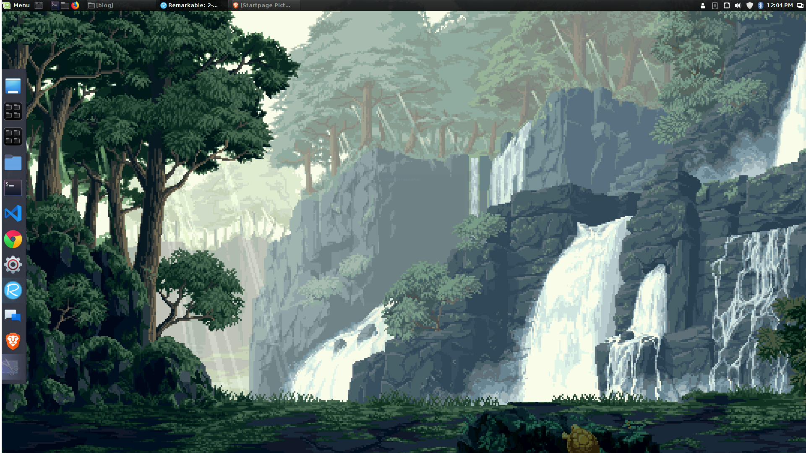

2 Years of Linux Mint
I’ve been running Linux Mint as my daily driver for just over two years now. I want to lay out an honest review of my experiences using Linux as my main operating system (aka OS) so that interested persons can know what it’s like to switch from commercial operating systems, the pros and cons, and other tidbits about Linux as a desktop OS.
My Background
I’ve been using desktop computers daily for roughly eighteen years, with a handful of days off for vacations and such. My day job as a Backend Engineer involves relatively advanced computer skills including terminal usage, managing cloud server instances, and programming. My skill level with computers is probably near or equal to that of a “power user”. As such things I find easy do not reflect the skill level of the average desktop user. I’ve used every major OS including multiple versions of Windows, Mac OS, and several Linux distributions (aka distros) - primarily Debian variants.
Why Linux?
I decided to switch to Linux as my primary OS mainly because of the shady practices Microsoft was using to promote Windows 10 , and the various privacy concerns that Windows 10 Home Edition raised However, there were a few other reasons I made the switch - namely Linux user testimony praising the following benefits:
- Increased reliability & less restarts due to OS glitches
- Broader attack surface for malicious software with added security benefits revolving around root account protections
- Free and Open Source
- No ties to commercial or state spy agencies
- Built-in productivity tools such as the LibreOffice suite
- A more robust terminal experience
- Supports Civ V natively via Steam :)
Why Linux Mint?
Although I would consider myself to be somewhat of a “power user” I enjoy my creature comforts as well. I don’t want to fight with my operating system. Like most folks, I want an OS that works as soon as it’s installed. Time spent configuring drivers is time I’d rather spend doing almost anything else. I tried a few distros before settling on Linux Mint, including Ubuntu Linux, Kali Linux, Puppy Linux, and Zorin OS. To me, the Linux Mint experience is the most polished of the common distros. Typically, if developers have time to polish their software, they have put in the time to get the essentials right as well - so I put some trust in the developers based primarily on first appearances.
Pros and Cons
So is Mint a utopia filled with rainbows and sunshine? Is it THE WINDOWS KILLER? No. Sorry, but no. It’s fantastic, don’t get me wrong - but there are a few pain points as well. Here are the most prominent pros and cons in my opinion:
Con: Still Terminal Heavy
Compared with certain Linux distros, Mint is a cakewalk. An average Joe can load it onto a flash drive, plug it in, and follow the installation wizard without mucking things up. Virtually all hardware will work out of the box, and the package manager has most of what the average user needs to be productive and happy.

However, if you want to go beyond the basics, or if you run into any issues, you need to be ready to play ball with the terminal. Almost all documentation centered around Mint / Ubuntu involves terminal usage. While I’m a big fan of the terminal personally, most users aren’t. I don’t have any sources to back this up, yet, its common knowledge that a lot of users aren’t just uncomfortable with terminal usage, they fear it.
If the Linux community wants to hold any significant share of the desktop market then there needs to be a distro that works for both the power user and the least common denominator. Mint has covered a lot of ground in terms of simplicity and usability - but it’s just not enough for the common user. Linux Mint, in my opinion, is still a “geeks only” operating system until it has GUI based tools and documentation that the common user can use to fix their own computer issues.
Pro: Maximum Customization
I can’t stress just how cool it is to be able to change almost anything about your Desktop Environment. Virtually everything including fonts, icons, color schemes, the desktop environment, and menus can be customized to the user’s liking. There are even people known as “ricers “ who spend days tweaking every last detail of their Desktop Environment just so they can show it off. If you think Mac OS is sleek when it comes to user interface and customzation, you’ll be wowed by Linux Mint.
Con: Graphics Heavy Applications Suck
I’ve got some decent hardware - a dedicated GPU with some serious onboard memory, a CPU that would make the heads of early NASA scientists explode, and enough RAM to simultaneously run VS Code, Slack, and Chrome :)
Yet for whatever reason, I can’t edit videos without going through several crashes. Civ V, though developed natively still crashes from time to time, plus it renders as if I was using DirectX 9. I can run imagemagick / ffmpeg with no problems - so perhaps this is a flaw with the indivdual applications I use, and not with Linux/Mint itself. But, when crashes happen virtually anytime a graphics heavy application is in use…one begins to wonder…
Pro: Possibly the Comfiest Operating System
This is probably the greatest benefit of Mint in my opinion, though it likely applies to almost all Linux variants. Aside from graphics, it works beautifully. I can leave my computer on for days, even weeks - and it just keeps humming along without a hitch. I can update my computer without restarting. I don’t know the keyboard shortcut for the System Monitor (the Mint equivalent of Windows Task Manager) after two years of use, because I’ve only had to use it a handful times. In terms of productivity and reliability - it’s unbeatable.
Conclusion
If you are loking to get your feet wet with Linux, and you’ve got the computer skills to back it up - I highly recommend you give Mint a try. It’s free as in “free beer” and as in “freedom”. It’s has a very comfortable user experience, works with almost every piece of commercial hardware, and has the built-in software to be a truly robust operating system. Yes, it’s got a few issues, but what Operating System doesn’t?
After 2 years I only use Windows to play a few games that only run on Windows and run poorly via Wine, as well as video editing. My poor Macbook is collecting dust, because it only gets used when travelling.